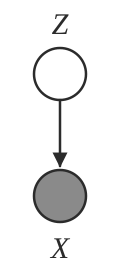
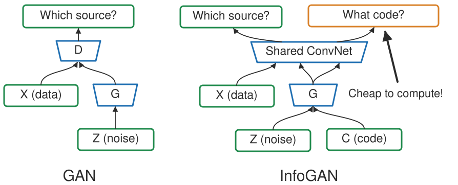
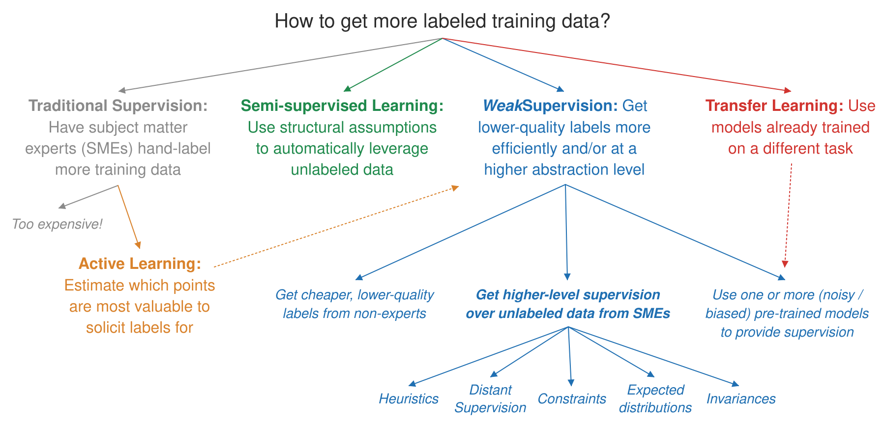
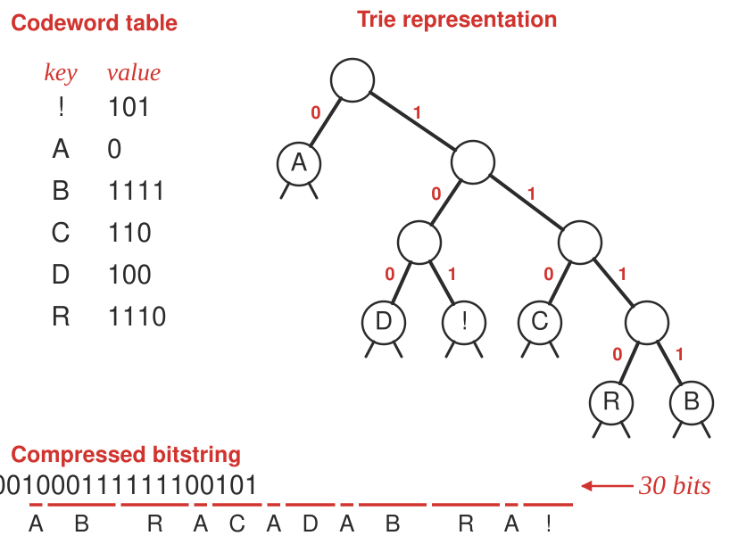
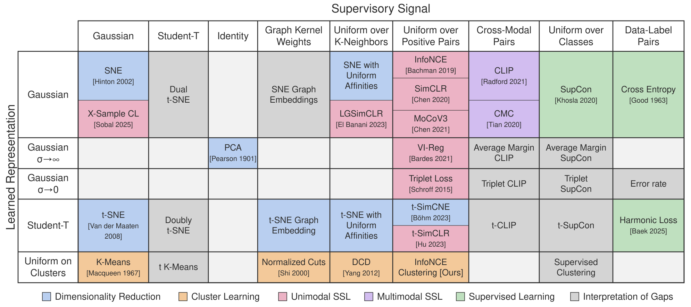

5.5. unsupervised#
5.5.1. clustering#
labels are not given
intra-cluster distances are minimized, inter-cluster distances are maximized
distance measures
symmetric D(A,B)=D(B,A)
self-similarity D(A,A)=0
positivity separation D(A,B)=0 iff A=B
triangular inequality D(A,B) <\(\leq\) D(A,C)+D(B,C)
ex. Minkowski Metrics \(d(x,y)=\sqrt[r]{\sum \vert x_i-y_i\vert ^r}\)
r=1 Manhattan distance
r=1 when y is binary -> Hamming distance
r=2 Euclidean
r=\(\infty\) “sup” distance
correlation coefficient - unit independent
edit distance
5.5.1.1. hierarchical#
two approaches:
bottom-up agglomerative clustering - starts with each object in separate cluster then joins
top-down divisive - starts with 1 cluster then separates
ex. starting with each item in its own cluster, find best pair to merge into a new cluster
repeatedly do this to make a tree (dendrogram)
distances between clusters defined by linkage function
single-link - closest members (long, skinny clusters)
complete-link - furthest members (tight clusters)
average - most widely used
ex. MST - keep linking shortest link
ultrametric distance - tighter than triangle inequality
\(d(x, y) \leq \max[d(x,z), d(y,z)]\)
5.5.1.2. partitional#
partition n objects into a set of K clusters (must be specified)
globally optimal: exhaustively enumerate all partitions
minimize sum of squared distances from cluster centroid
evaluation w/ labels - purity - ratio between dominant class in cluster and size of cluster
k-means++ - better at not getting stuck in local minima
randomly move centers apart
Complexity: \(O(n^2p)\) for first iteration and then can only get worse
5.5.1.3. statistical clustering (j 10)#
latent vars - values not specified in the observed data
A mixture model represented as a graphical model. The latent variable Z is a multinomial node taking on one of K values

K-Means
start with random centers
E: assign everything to nearest center: $\(O(\vert \text{clusters}\vert *np) \)$
M: recompute centers \(O(np)\) and repeat until nothing changes
partition amounts to Voronoi diagram
can be viewed as minimizing distortion measure $\(J=\sum_n \sum_i z_n^i \vert \vert x_n - \mu_i\vert \vert ^2\)$
GMMs: $\(p(x\vert \theta) = \underset{i}{\Sigma} \pi_i \mathcal{N}(x\vert \mu_i, \Sigma_i)\)$
- \[ \begin{align}\begin{aligned}\begin{split}l(\theta\vert x) = \sum_n \log \: p(x_n\vert \theta) \\ = \sum_n \log \sum_i \pi_i \mathcal{N}(x_n\vert \mu_i, \Sigma_i)$$<!-- --> - hard to maximize bcause log acts on a sum - "soft" version of K-means - update means as weighted sums of data instead of just normal mean - sometimes initialize K-means w/ GMMs\end{split}\\### conditional mixture models - regression/classification (j 10)\\```mermaid graph LR; X-->Y; X --> Z Z --> Y ```\\- ex.  - latent variable Z has multinomial distr. - <span class="cblue">mixing proportions</span>: $$\cblue{P(Z^i=1\vert x, \xi)}\end{aligned}\end{align} \]
ex. \( \frac{e^{\xi_i^Tx}}{\sum_je^{\xi_j^Tx}}\)
mixture components: $\(\corange{p(y\vert Z^i=1, x, \theta_i)}\)$ ~ different choices
ex. mixture of linear regressions
- \[ \begin{align}\begin{aligned}p(y\vert x, \theta) = \sum_i \cblue{\underbrace{\pi_i (x, \xi)}_{\text{mixing prop.}}} \cdot \corange{\underbrace{\mathcal{N}(y\vert \beta_i^Tx, \sigma_i^2)}_{\text{mixture comp.}}}$$<!-- --> - ex. mixtures of logistic regressions - $$p(y\vert x, \theta_i) = \cblue{\underbrace{\pi_i (x, \xi)}_{\text{mixing prop.}}} \cdot \corange{\underbrace{\mu(\theta_i^Tx)^y\cdot[1-\mu(\theta_i^Tx)]^{1-y}}_{\text{mixture comp.}}}$$ where $\mu$ is the logistic function - also, nonlinear optimization for this (including EM)\\## dim reduction\\In general there is some tension between preserving global properties (e.g. PCA) and local peroperties (e.g. nearest neighborhoods)\\| Method | Analysis objective | Temporal smoothing | Explicit noise model | Notes | |---------------------|--------------------|--------------------|----------------------|---------------------| | PCA | Covariance | No | No | orthogonality | | FA | Covariance | No | Yes | like PCA, but with errors (not biased by variance) | | LDS/GPFA | Dynamics | Yes | Yes | | | NLDS | Dynamics | Yes | Yes | | | LDA | Classification | No | No | | | Demixed | Regression | No | Yes/No | | | Isomap/LLE | Manifold discovery | No | No | | | T-SNE | .... | .... | ... | | | UMAP | ... | ... | ... | |\\- NMF - $$\min_{D \geq 0, A \geq 0} \vert \vert X-DA\vert \vert _F^2\end{aligned}\end{align} \]
SEQNMF
LDA/QDA - finds basis that separates classes
reduced to axes which separate classes (perpendicular to the boundaries)
K-means - can be viewed as a linear decomposition
5.5.1.4. spectral clustering#
spectral clustering - does dim reduction on eigenvalues (spectrum) of similarity matrix before clustering in few dims
uses adjacency matrix
basically like PCA then k-means
performs better with regularization - add small constant to the adjacency matrix
5.5.1.5. pca#
want new set of axes (linearly combine original axes) in the direction of greatest variability
this is best for visualization, reduction, classification, noise reduction
assume \(X\) (nxp) has zero mean
derivation:
minimize variance of X projection onto a unit vector v
\(\frac{1}{n} \sum (x_i^Tv)^2 = \frac{1}{n}v^TX^TXv\) subject to \(v^T v=1\)
\(\implies v^T(X^TXv-\lambda v)=0\): solution is achieved when \(v\) is eigenvector corresponding to largest eigenvalue
like minimizing perpendicular distance between data points and subspace onto which we project
SVD: let \(U D V^T = SVD(Cov(X))\)
\(\text{Cov}(X) = \frac{1}{n}X^TX\), where X has been demeaned
equivalently, eigenvalue decomposition of covariance matrix \(\Sigma = X^TX\)
each eigenvalue represents prop. of explained variance: \(\sum \lambda_i = \operatorname{tr}(\Sigma) = \sum Var(X_i)\)
screeplot - eigenvalues in decreasing order, look for num dims with kink
don’t automatically center/normalize, especially for positive data
SVD is easier to solve than eigenvalue decomposition, can also solve other ways
multidimensional scaling (MDS)
based on eigenvalue decomposition
adaptive PCA
extract components sequentially, starting with highest variance so you don’t have to extract them all
good PCA code: http://cs231n.github.io/neural-networks-2/
X -= np.mean(X, axis = 0) ## zero-center data (nxd)
cov = (X.T @ X) / X.shape[0] ## get cov. matrix (dxd)
U, D, V = np.linalg.svd(cov) ## compute svd, (all dxd)
Xrot_reduced = X @ U[:, :2] ## project onto first 2 dimensions (n x 2)
nonlinear pca
usually uses an auto-associative neural network
5.5.1.6. topic modeling#
similar, try to discover topics in a model (which maybe can be linearly combined to produce the original document)
ex. LDA - generative model: posits that each document is a mixture of a small number of topics and that each word’s presence is attributable to one of the document’s topics
5.5.1.7. sparse coding = sparse dictionary learning#
reconstruction error + sparsity penalty
D is like autoencoder output weight matrix
\(a\) is more complicated - requires solving inner minimization problem
outer loop is not quite lasso - weights are not what is penalized
impose norm \(D\) not too big
algorithms
thresholding (simplest) - do \(D^Ty\) and then threshold this
basis pursuit - change \(l_0\) to \(l_1\)
this will work under certain conditions (with theoretical guarantees)
matching purusuit - greedy, find support one at a time, then look for the next one
5.5.1.8. ica#
overview
remove correlations and higher order dependence
all components are equally important
like PCA, but instead of the dot product between components being 0, the mutual info between components is 0
goals
minimize statistical dependence between components
maximize information transferred in a network of non-linear units
uses information theoretic unsupervised learning rules for neural networks
problem - doesn’t rank features for us
goal: want to decompose \(X\) into \(z\), where we assume \(X = Az\)
assumptions
independence: \(P(z) = \prod_i P(z_i)\)
non-gaussianity of \(z\)
2 ways to get \(z\) that matches these assumptions
maximize non-gaussianity of \(z\) - use kurtosis, negentropy
minimize mutual info between components of \(z\) - use KL, max entropy
often equivalent
identifiability: \(z\) is identifiable up to a permutation and scaling of sources when
at most one of the sources \(z_k\) is gaussian
\(A\) is full-rank
ICA learns components which are completely independent, whereas PCA learns orthogonal components
non-linear ica: \(X \approx f(z)\), where assumptions on \(z\) are the same, but \(f\) can be nonlinear
to obtain identifiability, we need to restrict \(f\) and/or constrain the distr of the sources \(z\)
bell & sejnowski 1995 original formulation (slightly different)
entropy maximization - try to find a nonlinear function \(g(x)\) which lets you map that distr \(f(x)\) to uniform
then, that function \(g(x)\) is the cdf of \(f(x)\)
in ICA, we do this for higher dims - want to map distr of $\(x_1, ..., x_p\)\( to \)\(y_1, ..., y_p\)\( where distr over \)y_i$’s is uniform (implying that they are independent)
additionally we want the map to be information preserving
mathematically: \(\underset{W} \max I(x; y) = \underset{W} \max H(y)\) since $\(H(y\vert x)\)$ is zero (there is no randomness)
assume \(y = \sigma (W x)\) where \(\sigma\) is elementwise
(then S = WX, \(W=A^{-1}\))
requires certain assumptions so that \(p(y)\) is still a distr: $\(p(y) = p(x) / \vert J\vert \)$ where J is Jacobian
learn W via gradient ascent $\(\Delta W \propto \partial / \partial W (\log \vert J\vert )\)$
there is now something faster called fast ICA
topographic ICA (make nearby coefficient like each other)
interestingly, some types of self-supervised learning perform ICA assuming certain data structure (e.g. time-contrastive learning (hyvarinen et al. 2016))
5.5.1.9. topological#
multidimensional scaling (MDS)
given a a distance matrix, MDS tries to recover low-dim coordinates s.t. distances are preserved
minimizes goodness-of-fit measure called stress = $\(\sqrt{\sum (d_{ij} - \hat{d}_{ij})^2 / \sum d_{ij}^2}\)$
visualize in low dims the similarity between individial points in high-dim dataset
classical MDS assumes Euclidean distances and uses eigenvalues
constructing configuration of n points using distances between n objects
uses distance matrix
\(d_{rr} = 0\)
\(d_{rs} \geq 0\)
solns are invariant to translation, rotation, relfection
solutions types
non-metric methods - use rank orders of distances
invariant to uniform expansion / contraction
metric methods - use values
D is Euclidean if there exists points s.t. D gives interpoint Euclidean distances
define B = HAH
D Euclidean iff B is psd
t-sne preserves pairwise neighbors
t-sne tries to match pairwise distances between the original data and the latent space data: $\(\mathbb{E}_{\substack{\mathbf{z}_i \sim q_{\boldsymbol{\phi}}(\mathbf{z} \vert \mathbf{x}_i) \\ \mathbf{z}_j \sim q_{\boldsymbol{\phi}}(\mathbf{z} \vert \mathbf{x}_j)}} \underbrace{\left[ \sum_j \mathbb{KL}\Big[ \cblue{\overbrace{p(\mathbf{x}_j \vert \mathbf{x}_i)}^{\text{dist in original space}}} \Vert \corange{\underbrace{q_{\boldsymbol{\phi}}(\mathbf{z}_j \vert \mathbf{z}_i)}_{\text{dist in latent space}}} \Big] \right]}_{\text{pairwise similarity}}\)$
original data
distances are converted to probabilities by assuming points are means of Gaussians, then normalizing over all pairs
variance of each Gaussian is scaled depending on the desired perplexity
latent data
distances are calculated using some kernel function
t-SNE uses heavy-tailed Student’s t-distr kernel (van der Maaten & Hinton, 2008)
SNE use Gausian kernel (Hinton & Roweis, 2003)
kernels have some parameters that can be picked or learned
perplexity - how to balance between local/global aspects of data
optimization - for optimization purposes, this can be decomposed into attractive/repulsive forces
umap: Uniform Manifold Approximation and Projection for Dimension Reduction
pacmap
pacmap’s loss: $\(\text{Loss}^{\text{PaCMAP}} = \cblue{w_{\text{neighbors}} \text{Loss}_{\text{neighbors}}} + \corange{w_{MN} \text{Loss}_{MN}} + \cgreen{w_{FP} \text{Loss}_{FP}}\)$
- \[\text{distance}(i,j) := \Vert \boldsymbol{y}_i - \boldsymbol{y}_j \Vert^2 + 1\]
neighbors (attractive): $\(\cblue{\text{Loss}_{\text{neighbors}}} = \frac{\text{distance}(i,j)}{\text{distance}(i,j) + 10}\)$
mid-near pairs (mild attractive): $\(\corange{\text{Loss}_{\text{MN}}} = \frac{\text{distance}(i,l)}{\text{distance}(i,l) + 10000}\)$
further points (repulsive): $\(\cgreen{\text{Loss}_{\text{FP}}} = \frac{1}{\text{distance}(i,l) + 1}\)$
weights change on a schedule
stage 1 (1:100): $\(w_{\text{neighbors}}\)\( is medium (2), \)\(w_{MN}\)\( goes from huge to small (1000 to 3), \)\(w_{FP}\)$ is medium (1)
stage 2 (101-200): $\(w_{\text{neighbors}}\)\( is large (3), \)\(w_{MN}\)\( is small (3), \)\(w_{FP}\)$ is medium (1)
5.5.1.10. misc#
Sparse Component Analysis (zimnik…cunningham, paninski, churchland, & glaser, 2024)
- \[ \begin{align}\begin{aligned}\arg \min _{U, V}\left(\cblue{\vert W(X-X U V)\vert _F^2}+\corange{\lambda_{\text {sparse }}\vert X U\vert _1}+\cgreen{\lambda_{\text {orth }}\left\vert V V^{\top}-I\right\vert _F^2}\right)$$<!-- --> - <span class="cblue">reconstruction</span> + <span class="corange">sparsity</span> + <span class="cgreen">orthogonality</span> - where $U$ is encoding matrix and $V$ is decoding, <span class="cgreen">the final loss term is imposing orthogonality of the columns of V</span> - NNK-Means: Dictionary Learning using Non-Negative Kernel regression ([shekkizhar & ortega, 2021](https://arxiv.org/abs/2110.08212)) - data summarization - represent large datasets by a small set of elements (e.g. k-means) - here, use dictionary learning instead of k-means to summarize data - each dictionary element is a sparse combination of inputs - use non-negative kernel regesion (NNK) to measure distances when designing the dictionary ([shekkizar & ortega, 2020](https://ieeexplore.ieee.org/abstract/document/9054425/))\\## generative models\\\begin{split}- overview: https://blog.openai.com/generative-models/ - notes for [deep unsupervised learning](https://sites.google.com/view/berkeley-cs294-158-sp20/home) - MLE equivalent to minimizing KL for density estimation: - $$\min_\theta KL(p\vert \vert p_\theta) =\\ \min_\theta-H(p) + \mathbb E_{x\sim p}[-\log p_\theta(x)] \\ \max_\theta E_p[\log p_\theta(x)]$$<!-- -->\end{split}\\### autoregressive models\\- model input based on input - $p(x_1)$ is a histogram (learned prior) - $$p(x_2\vert x_1)$$ is a distr. ouptut by a neural net (output is logits, followed by softmax) - all conditional distrs. can be given by neural net - can model using an RNN: e.g. char-rnn (karpathy, 2015): $$\log p(x) - \sum_i \log p(x_i \vert x_{1:i-1})$$, where each $x_i$ is a character - can also use masks - masked autoencoder for distr. estimation - mask some weights so that autoencoder output is a factorized distr. - pick an odering for the pixels to be conditioned on - ex. 1d masked convolution on wavenet (use past points to predict future points) - ex. pixelcnn - use masking for pixels to the topleft - ex. gated pixelcnn - fixes issue with blindspot - ex. pixelcnn++ - nearby pixel values are likely to cooccur - ex. pixelSNAIL - uses attention and can get wider receptive field - **attention:**$A(q, K, V) = \sum_i \frac{\exp(q \cdot k_i)}{\sum_j \exp (q \cdot k_j)} v_i$ - masked attention can be more flexible than masked convolution - can do super resolution, hierarchical autoregressive model - problems - slow - have to sample each pixel (can speed up by caching activations) - can also speed up by assuming some pixels conditionally independent - hard to get a latent reprsentation - can use **Fisher score** $\nabla_\theta \log p_\theta (x)$\\ ### vaes\\- [intuitively understanding vae](https://towardsdatascience.com/intuitively-understanding-variational-autoencoders-1bfe67eb5daf) - [VAE tutorial](https://jaan.io/what-is-variational-autoencoder-vae-tutorial/) - minimize $$\mathbb E_{q_\phi(z\vert x)}[\cblue{\log p_\theta(x\vert z)}- \corange{D_{KL}(q_\phi(z\vert x)\:\vert \vert \:p(z))}]\end{aligned}\end{align} \]
reconstruction - KL to prior
want latent \(z\) to be standard normal - keeps the space smooth
hard to directly calculate $\(p(z\vert x)\)\(, since it includes \)p(x)\(, so we approximate it with the variational posterior \)\(q_\phi (z\vert x)\)$, which we assume to be Gaussian
goal: $\(\text{argmin}_\phi \cpurple{KL(q_\phi(z\vert x) \:\vert \vert \:p(z\vert x))}\)$
still don’t have acess to \(p(x)\), so rewrite $\(\log p(x) = \cgreen{ELBO(\phi)} + \cpurple{KL(q_\phi(z\vert x) \: \vert \vert \: p(z\vert x))}\)$
instead of minimizing \(KL\), we can just maximize the $\(\cgreen{ELBO}=\mathbb E_q [\log p(x, z)] - \mathbb E_q[\log q_\phi (z\vert x)]\)$
mean-field variational inference - each point has its own params (e.g. different encoder DNN) vs amortized inference - same encoder for all points
-
want large evidence \(\log p_\theta (\mathbf x)\) (means model is a good fit to the data)
want good fit to the posterior $\(q_\phi(z\vert x)\)$
just an autoencoder where the middle hidden layer is supposed to be unit gaussian
add a kl loss to measure how well it matches a unit gaussian
for calculation purposes, encoder actually produces means / vars of gaussians in hidden layer rather than the continuous values….
this kl loss is not too complicated…https://web.stanford.edu/class/cs294a/sparseAutoencoder.pdf
generally less sharp than GANs
uses mse loss instead of gan loss…
intuition: vaes put mass between modes while GANs push mass towards modes
constraint forces the encoder to be very efficient, creating information-rich latent variables. This improves generalization, so latent variables that we either randomly generated, or we got from encoding non-training images, will produce a nicer result when decoded.
5.5.1.11. gans#
evaluating gans
don’t have explicit objective like likelihood anymore
kernel density = parzen-window density based on samples yields likelihood
inception score $\(IS(\mathbf x) = \exp(\cblue{\underbrace{H(\mathbf y)}_{\text{want to generate diversity of classes}}} - \corange{\underbrace{H(\mathbf y\vert \mathbf x)}_{\text{each image should be distinctly recognizable}}})\)$
FID - Frechet inception score works directly on embedded features from inception v3 model
embed population of images and calculate mean + variance in embedding space
measure distance between these means / variances for real/synthetic images using Frechet distance = Wasseterstein-2 distance
infogan

problems
mode collapse - pick just one mode in the distr.
train network to be loss function
original gan paper (2014)
generative adversarial network
goal: want G to generate distribution that follows data
ex. generate good images
two models
G - generative
D - discriminative
G generates adversarial sample x for D
G has prior z
D gives probability p that x comes from data, not G
like a binary classifier: 1 if from data, 0 from G
adversarial sample - from G, but tricks D to predicting 1
training goals
G wants D(G(z)) = 1
D wants D(G(z)) = 0
D(x) = 1
converge when D(G(z)) = 1/2
G loss function: \(G = \text{argmin}_G \log(1-D(G(Z))\)
overall \(\min_g \max_D\) log(1-D(G(Z))
training algorithm
in the beginning, since G is bad, only train my minimizing G loss function
projecting into gan latent space (=gan inversion)
2 general approaches
learn an encoder to go image -> latent space
In-Domain GAN Inversion for Real Image Editing (zhu et al. 2020)
learn encoder to project image into latent space, with regularizer to make sure it follows the right distr.
optimize latent code wrt image directly
can also learn an encoder to initialize this optimization
some work designing GANs that are intrinsically invertible
stylegan-specific - some works which exploit layer-wise noises
stylegan2 paper: optimize w along with noise maps - need to make sure noise maps don’t include signal
5.5.1.12. diffusion / energy-based models#
first describe a procedure for gradually turning data into noise
then train a DNN to invert this procedure step-by-step
single model handles many different noise levels with shared parameters
seminal paper: Generative Modeling by Estimating Gradients of the Data Distribution (song & ermon, 2019)
really started earlier: Deep Unsupervised Learning using Nonequilibrium Thermodynamics (sohl-dickstein, …, ganguli, 2015)
Improved Denoising Diffusion Probabilistic Models ([2021](https://arxiv.org/abs/2102.0 9672))
can make this class-conditionnal by incorporating classifier into the model which inverts the noise
Diffusion Models Beat GANs on Image Synthesis (2021)
5.5.1.13. flow models#
goal: learn generator function \(G\) to map gaussian samples z into real data samples x (like images)
learn density $\(p\left(\mathbf{x}^{\prime}\right)=p_{\text {base }}\left(\mathbf{z}^{\prime}\right)\left\vert \frac{\partial \mathbf{z}}{\partial \mathbf{x}}\right\vert \)\( (because multiplying by \)\partial x$ gives you the area under the density function)
this generalizes to $\(p\left(\mathbf{x}^{\prime}\right)=p_{\text {base }}\left(\mathbf{z}^{\prime}\right)\left\vert \operatorname{det}\left[\boldsymbol{J}_{\boldsymbol{G}^{-1}}\right]\right\vert \)$ for multiple dimensions
computing likelihood of p(x) requires that \(G\) is invertible and to compute the above det efficiently
Solution in NICE (dinh, krueger & bengio, 2014) and Real NVP (dinh, sohl-dickstein & bengio, 2016) is to use an Affine coupling layer
this layer outputs (1) a copy of half the inputs and (2) uses a neural net to predict a scalar and offset for the other half of the inputs. This allows easy invertibility and det computation
Can set up the masks for which half to copy in a structured way. Glow (kingma & dhariwal, 2018) uses invertible 1x1 convolutions on top of this to improve performance
Solution in autoregressive flow (kingma…welling, 2016; papamakarios, pavlakou & murray, 2017) - use preceding inputs to predict parameters for an invertible function to transform an input
Residual flows (Invertible Residual Networks (behrmann…jacobsen, 2018); Residual Flows (chen, behrmann, duvenaud & jacobsen, 2019)) - allow Jacobian to be relatively unconstrained but use approximations of neural net to allow invertibility
output is input plus a contractive map function of the input
good intro to implementing invertible neural networks: https://hci.iwr.uni-heidelberg.de/vislearn/inverse-problems-invertible-neural-networks/
input / output dimension need to have same dimension
we can get around this by padding one of the dimensions with noise variables (and we might want to penalize these slightly during training)
if we allow for many layers, we can parameterize with time to get continuous normalizing flows (FFJORD (grathwohl…duvenaud, 2018))
Flow Matching for Generative Modeling (lipman…le, 2022) - match the flow that evolves over time rather than using an ODE solver
this requires assumptions for computing the conditional distribution and path for getting x at time zero (noise) to final s, e.g. linear interpolation over time
varying these assumptions leads to methods like rectified flow (liu, gong & liu, 2022) or Stochastic Interpolants (albergo, boffi & vanden-eijnden, 2023)
moving beyond mapping simple pairs, we can match over multiple simultaneous pairs using optimal transport, e.g. OT-CFM(tong…bengio, 2023) or Multisample Flow Matching (pooladian…chen, 2023)
ultimate goal: a likelihood-based model with
fast sampling
fast inference (evaluating the likelihood)
fast training
good samples
good compression
transform some \(p(x)\) to some \(p(z)\)
\(x \to z = f_\theta (x)\), where \(z \sim p_Z(z)\)
\(p_\theta (x) dx = p(z)dz\)
$\(p_\theta(x) = p(f_\theta(x))\vert \frac {\partial f_\theta (x)}{\partial x}\vert \)$
autoregressive flows
map \(x\to z\) invertible
\(x \to z\) is same as log-likelihood computation
\(z\to x\) is like sampling
end up being as deep as the number of variables
discrete data can be harder to model
dequantization - add noise (uniform) to discrete data
5.5.2. self/semi-supervised#
5.5.2.1. self-supervised#
blog: https://dawn.cs.stanford.edu/2017/07/16/weak-supervision/
training data is hard to get
related paper: https://www.biorxiv.org/content/early/2018/06/16/339630

- basics: predict some part of the input (e.g. present from past, bottom from top, etc.) - ex. denoising autoencoder - ex. in-painting (can use adversarial loss) - ex. colorization, split-brain autoencoder - colorization in video given first frame (helps learn tracking) - ex. relative patch prediction - ex. orientation prediction - ex. nlp - word2vec - bert - predict blank word - contrastive predictive coding - translates generative modeling into classification - *contrastive loss* = *InfoNCE loss* uses cross-entropy loss to measure how well the model can classify the “future” representation among a set of unrelated “negative” samples - negative samples may be from other batches or other parts of the input - momentum contrast - queue of previous embeddings are "keys" - match new embedding (query) against keys and use contrastive loss - similar idea as memory bank - Unsupervised Visual Representation Learning by Context Prediction ([efros 15](https://www.cv-foundation.org/openaccess/content_iccv_2015/html/Doersch_Unsupervised_Visual_Representation_ICCV_2015_paper.html)) - predict relative location of different patches - SimCLR ([chen et al, 2020](https://arxiv.org/abs/2002.05709)) - maximize agreement for different points after some augmentation (contrastive loss)5.5.2.2. semi-supervised#
make the classifier more confident
entropy minimization - try to minimize the entropy of output predictions (like making confident predictions labels)
pseudo labeling - just take argmax pred as if it were the label
label consistency with data augmentation
Billion-scale semi-supervised learning for image classification (FAIR, 19)
unsupervised learning + model distillation succeeds on imagenet
ensembling
temporal ensembling - ensemble multiple models at different training epochs
mean teachers - learn from exponential moving average of students
unsupervised data augmentation - augment and ensure prediction is the same
distribution alignment - ex. cyclegan - enforce cycle consistency = dual learning = back translation
simpler is marginal matching
5.5.2.3. compression#
simplest - fixed-length code
variable-length code
could append stop char to each codeword
general prefix-free code = binary tries
codeword is path from froot to leaf

huffman code - higher prob = shorter
arithmetic coding
motivation: coding one symbol at a time incurs penalty of +1 per symbol - more efficient to encode groups of things
can be improved with good autoregressive model
5.5.2.4. contrastive learning#
\(L_{\text {InfoNCE }}=-\log \frac{\cblue{\exp \left(\operatorname{sim}\left(x, x^{+}\right) / \tau\right)}}{\cblue{\exp \left(\operatorname{sim}\left(x, x^{+}\right) / \tau\right)}+\corange{\sum_{i=1}^K \exp \left(\operatorname{sim}\left(x, x_i^{-}\right) / \tau\right)}}\)
positive pair vs. K negatives
sim(u, v): A similarity function
\(\tau\) (temperature): A hyperparameter that scales the scores to control how “sharp” the probability distribution is
gradient is proportional to \(1/ \tau\), so lower (like \(\tau < 1\)) makes it more sensitive to small differences in similarity score but also less stable to train
often times a projection head (small adapter) is added on top of the main representation before computing the loss
I-Con: A Unifying Framework for Representation Learning (alshammari…freeman, hamilton, 2025)

What makes for good views for contrastive learning (tian et al. 2020)
how to select views (e.g. transformations we want to be invariant to)?
reduce the mutual information (MI) between views while keeping task-relevant information intact
Supervised Contrastive Learning (khosla et al. 2020)
Data-Efficient Image Recognition with Contrastive Predictive Coding (hénaff et al. 2019)
pre-training with CPC on ImageNet improves accuracy
Automatically Discovering and Learning New Visual Categories with Ranking Statistics (han et al. 2020)